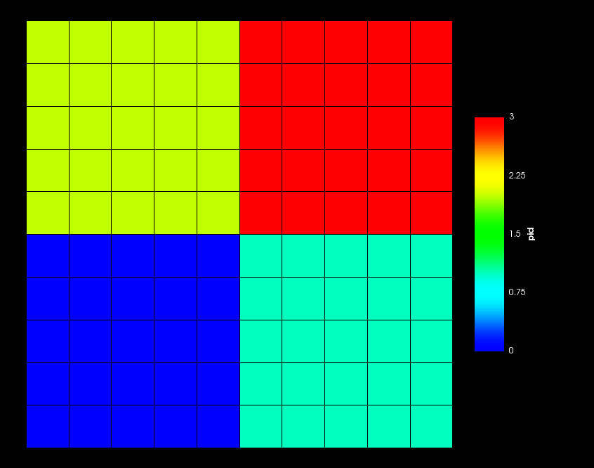

- grid_computationmanualWhether to determine the grid manually (using nx, ny and nz) or automatically. When using the automatic mode, the user can impose a certain value for nx, ny or nz, and the automatic factorization will adjust the number of processors in the other directions.
Default:manual
C++ Type:MooseEnum
Controllable:No
Description:Whether to determine the grid manually (using nx, ny and nz) or automatically. When using the automatic mode, the user can impose a certain value for nx, ny or nz, and the automatic factorization will adjust the number of processors in the other directions.
- nxNumber of processors in the X direction. Defaults to 1 in manual mode
C++ Type:unsigned int
Controllable:No
Description:Number of processors in the X direction. Defaults to 1 in manual mode
- nyNumber of processors in the Y direction. Defaults to 1 in manual mode
C++ Type:unsigned int
Controllable:No
Description:Number of processors in the Y direction. Defaults to 1 in manual mode
- nzNumber of processors in the Z direction. Defaults to 1 in manual mode
C++ Type:unsigned int
Controllable:No
Description:Number of processors in the Z direction. Defaults to 1 in manual mode
GridPartitioner
Create a uniform grid that overlays the mesh to be partitioned. Assign all elements within each cell of the grid to the same processor.
Description
Partitions the mesh by creating a grid in x,y,z and assigning each element of the mesh to a separate "cell" within the grid. This is useful when you have simple cartesian meshes and you just want to specify partitioning fairly directly. Sometimes a human is the best partitioner!
This is an example of a 2x2 grid partitioning for use on 4 processors.

2x2 GridPartitioner Example
warningwarning
The number of cells (nx*ny*nz) MUST be equal to the number of MPI processes you're attempting to use!
How it Works
The GridPartitioner works by creating a GeneratedMesh for the "grid". That's the reason why this object takes similar input file parameters to a GeneratedMesh. The GeneratedMesh created by GridPartitioner is guaranteed to contain the original domain within it.
To assign the processor IDs the centroid of each element of the mesh to be partitioned is searched for in the GeneratedMesh. The ID of the element of the GeneratedMesh that it lies within is then assigned as the processor_id.
Input Parameters
- control_tagsAdds user-defined labels for accessing object parameters via control logic.
C++ Type:std::vector<std::string>
Controllable:No
Description:Adds user-defined labels for accessing object parameters via control logic.
- enableTrueSet the enabled status of the MooseObject.
Default:True
C++ Type:bool
Controllable:No
Description:Set the enabled status of the MooseObject.